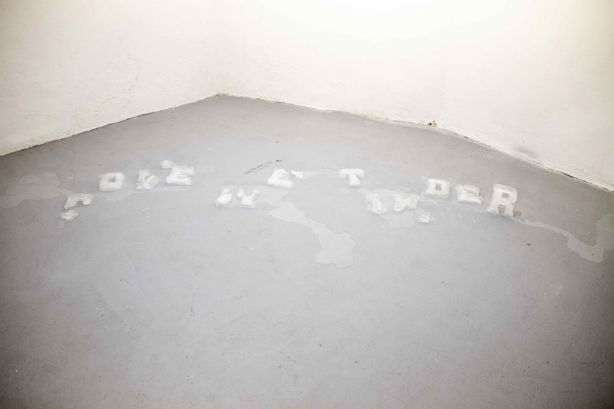

LOVE ME TINDER
2024
Installation / Ephemeral sculpture
12 melting ice letters
LOVE ME TINDER is a process-based work that explores the evanescence of language and desire. Based on a word composition by David García Casado the work sets the vulnerability and temporal suspension of the classic romantic ballad against the culture of instant gratification and the velocity of digital interfaces.
Digital documentation